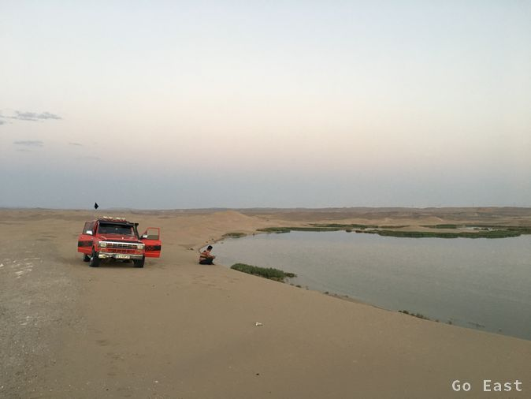
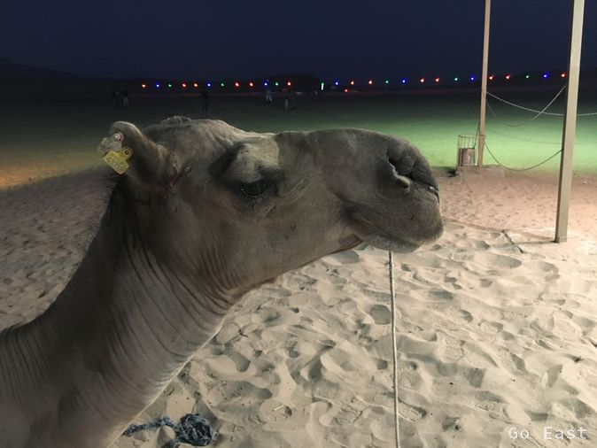

We walk to the nearby Travel Agency, which offers a free guided tour of Yazd, which is also a UNESCO World Heritage Site. We are the only participants and instead of walking, we start with the Elektrocart.
Isa, the guide is very competent and drives us through the narrow streets and knows many anecdotes of all sorts. Again and again he refers to the Zoroastrian faith, which before the Islamization probably had great importance here and has its center here.
Founder of the Faith was the Iranian priest and philosopher Zarathustra. He taught in Old Iranian in the second or first millennium BC. Chr.
Nietzsche used his name in his work, "Thus Spoke Zarathustra" as a narrator. Richard Strauss had evidently picked up on Nietzsche's zeitgeist of his day and created a tone poem from ‚Thus Spoke Zarathustra’.
The architecture of the buildings probably goes back to a large extent to the influence of this belief.
So we learn that the minarets were originally in the pre-Islamic time lighthouses of the caravan travelers and the name derives from the word, hearth, thus showing light to show the caravans the way.
Only later was it converted to call the faithful to prayer.
Also, the toggles on the doors are not for man or woman, as you might think, but provide information about the size of the house, because their shape produce different volumes.
Interesting are the wind towers that regulate the ventilation and cooling of the dwellings. Their structure is also is a traditional Persian architectural element.
Wind towers in Yazd
Yazd was once called a desert prison because it lies between the deserts Kawir und Lut and therefore there was no escape from here.
Since Yazd is literally a hot place, our physical activities are very limited today. Evening we drive, supported by the Travel Agency to Sunset in the desert. Unfortunately, the off-road vehicle is delayed and so we just miss the sunset. However, the dunes are gorgeous and the evening mood is great. Not to forget the dune ride with the Nissan car, which gives rise to memories of my trip to the Sahara with the G-car.
Desert around Yazd

Desert around Yazd
Desert around Yazd
Desert around Yazd
Desert around Yazd
Desert around Yazd
Desert around Yazd

Desert around Yazd
Finally, at a roof-top restaurant next door, we once again enjoy real western junk food in the form of cheeseburgers and baked mushrooms, as well as islamic beer and islamic mochito, both 0%
Afterwards, there is tea with a honey lolly.
honey lolly